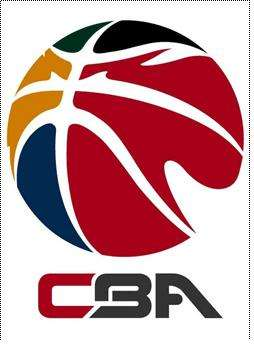
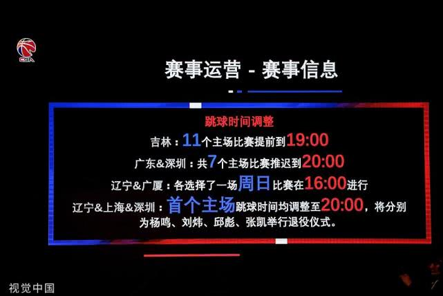
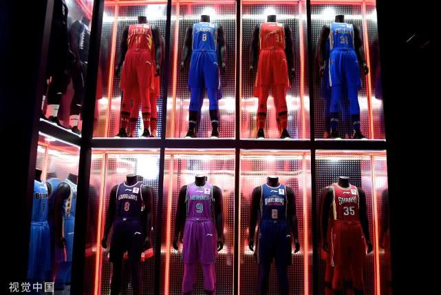

中国职业篮球联赛
中国男子篮球职业联赛（China Basketball Association），简称中职篮（CBA），是由中国篮球协会所主办的跨年度主客场制篮球联赛，中国最高等级的篮球联赛。其中诞生了如姚明、王治郅、易建联、朱芳雨等球星。

CBA在1995-1996赛季由555香烟取得联赛的冠名权，1996-1997赛季到2000-2001赛季为希尔顿中国男子篮球甲级联赛，之后摩托罗拉和联通新时空分别取得过联赛的冠名权，联赛在2005年正式更名为中国男子篮球职业联赛。CBA球队数量共计20支。
CBA自每年的10月或11月开始至次年的4月左右结束，截至2018-2019赛季，总共有7支球队夺得过总冠军（广东队九次夺冠，八一队八次夺冠，北京队三次夺冠，辽宁队、新疆队、上海队、四川队各夺冠一次）。
1995年CBA联赛（甲A联赛）创办时有12支球队参加，每年联赛最后两名降入甲B，甲B联赛的前两名升入甲A。1995年的12支球队里，有一半来自各个军区篮球队，八一、济南军区队、沈阳军区队、空军队、南京军区队、前卫队。CBA开始引入外援之后，只有八一队没有引援，其他的军区队都因为没有外援被称为“升降梯”，当年升级，当年降级。
空军队1998年解散，后来有了裁军令，军区体工队很多都被裁掉转型。沈阳军区队成为了浙江广厦，济南军区队成为了青岛队。
自2004年起，甲A取消升降级制，在2005年转而采取准入制，并正式更名为中国男子篮球职业联赛（CBA）。
东莞新世纪（2005年）、浙江广厦（2006年）、天津荣钢、青岛双星（2008年）先后通过准入制进入CBA，联赛规模达到18支。
2009-2010赛季，云南奔牛因未达到准入制度相关标准，该赛季参赛资格被取消，此后CBA就一直只有17支球队参赛。
2013年7月19日，中国篮协公布了NBL俱乐部申请参加CBA准入标准，最终，四川队获得参赛权，CBA在时隔五年后恢复了18支球队的规模。
2014年1月19日，信兰成宣布2014-2015赛季将会扩军，由于联赛不会有单数球队，下赛季扩军两支队伍达到两支，CBA将会达到历史最高的20支球队。
2014年9月3日，中国篮协通过投票确认―――江苏同曦和重庆翱龙加入CBA联盟，2014-2015赛季CBA球队数量将由18支增加到20支。
CBA2.0时代
敢梦敢当”成为CBA新时代的主题
2019年这个秋天，一度让中国的篮球从业者们感到无比的担忧和焦虑。先是中国男篮在世界杯上战绩不佳，接着突如其来的“莫雷事件”，又一次让篮球产业受到严重的打击。在这样微妙的时间节点，CBA既承载了众多关注的目光，同时也肩负着重振中国篮球的艰巨使命，而CBA2.0时代就这样正式掀开了序章。
就在篮球世界杯开始前不久，CBA公司新任CEO王大为，第一次面对公众抛出了CBA2.0这个概念。在那一场媒体爆满的发布会上，王大为花了超过1个小时的时间，讲解了数十页PPT，详尽而系统地讲述了CBA未来发展的核心规划与理念。而这一次赛季开始前的发布会，则将很多关键性的改变，落到了实处。
CBA2.0，是一个比较抽象且笼统的概念，但归根结底，它的推出根本目的就是打造一个更加深入人心，能够被更多人接受的品牌。CBA想不断开拓自己的受众群体，比赛是它的核心产品，最终的目的是让CBA不只是一个联赛，而是一个规模更大、影响力更深远的品牌。
在过去很长一段时间里，CBA的运营管理权一直归中国篮协所有，管理者们的思维，长期停留在――“只要办好比赛，让联赛顺利进行”就一切OK的层面上。直到姚明上任中国篮协主席，成立CBA公司，实现真正意义上的“管办分离”，CBA联赛的品牌意识才得到了越来越多的发掘和呈现。

CBA新赛季将要发生的重大变化，首先是部分比赛的跳球时间将被提前或者推迟。这其中，有的比赛是为了给主队办球员退役仪式留有充分的时间，有的则是考虑到转播需求，有的则是方面当地球迷的观赛习惯。但说到底，都是为了给办赛者和观赛者带来更多的便利，让他们更愿意走进球场看球。吸引更多的球迷来到现场看球，永远是任何一个职业体育联赛发展壮大的基础。
第二，新赛季CBA升级了购票渠道，为CBA开发制作官方票务平台CBAtickets，还设计增加了包括票务系统、官方售票网站、官方售票小程序等多个购票渠道。这些举动，为的就是方便球迷购票，简化购票的流程，避免“黄牛”泛滥给球迷造成的无谓损失。买票方便了，球迷们看球的热情自然也会随之提高。
第三，新赛季很多球队都会采用全新的视觉体系，包括新的队服、地板贴纸、球队logo等等。在常规赛部分场次中将试点主队球衣采用主场色调，进一步强化主场氛围和球迷归属感。这展现的是管理者品牌意识的增强，展现的是运营者对于细节的重视。视觉永远是给人的第一印象和体验，当球迷和受众的观感反响更好的时候，赛事本身才更容易被人接纳。
第四，未来CBA联赛将更加重视社群营销的作用，CBA将通过矢量打印运动地板和赛场软包等体现国潮元素；在年轻人喜闻乐见的快手、微博、虎扑和B站等平台上进行互动，与真人秀、音乐节等跨界合作实现破圈……这些努力的目的，也是希望打破篮球固有的圈层和局限，影响到更多不了解CBA，甚至不了解篮球的人，让他们开始关注篮球，开始关注CBA，让他们意识到，看CBA也可以变成一件很酷的事情。

未来，CBA的元素将渗透到人们生活当中的各个方面，绝不仅仅存在于球场，以及电视和网络上的转播。与CBA有关的各种线下活动，将越来越多地开展和推广，CBA联盟将授权开发多种周边衍生商品和官方授权游戏。当你拿起手机，可以边看CBA边答题抢红包；当你想看球，可以参加专属的球迷party边吃边聊。
当你的衣食住行都开始渐渐和CBA发生关系的时候，它才算真正开始走进你的生活，而这也是CBA2.0的终极目的。